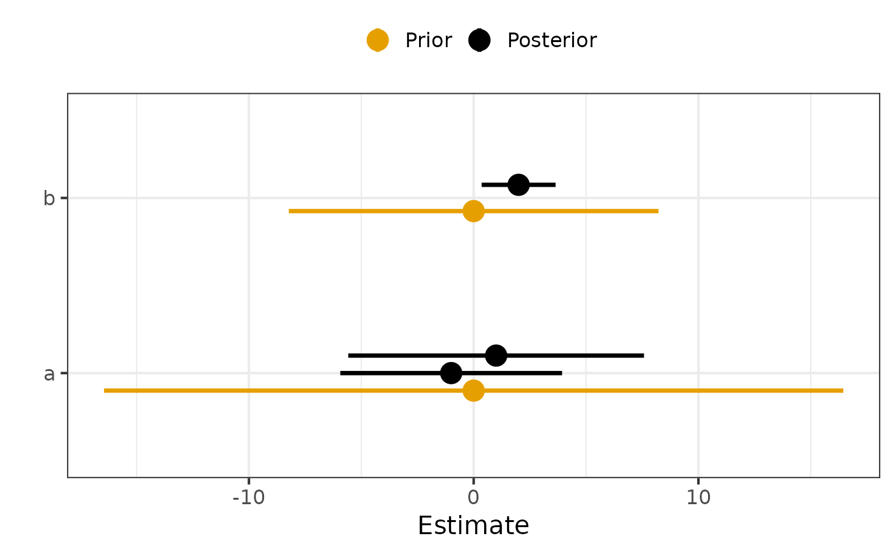
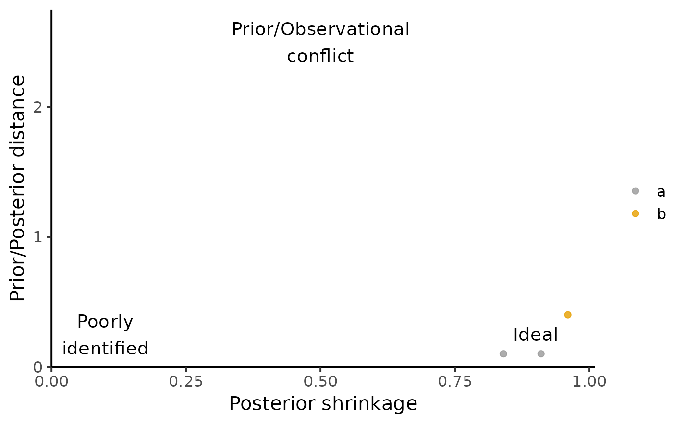

combine_prior_posterior subsets and binds the prior and posterior dataframes.
plot_prior_posterior plots posterior CI alongside prior CI.
compute_prior_influence computes diagnostics of how the posterior is influenced by the prior.
plot_prior_influence plots diagnostics from compute_prior_influence.
check_model_sensitivity is a deprecated alias of plot_prior_influence.
combine_prior_posterior(prior, post, pars = NULL, match_exact = TRUE) plot_prior_posterior( prior, post, pars = NULL, match_exact = TRUE, lb = "5%", ub = "95%" ) compute_prior_influence( prior, post, pars = NULL, match_exact = TRUE, remove_index_prior = TRUE ) plot_prior_influence(prior, post, pars = NULL, match_exact = TRUE) check_model_sensitivity(prior, post, pars = NULL)
| prior | Dataframe of prior parameter estimates.
The dataframe is expected to have columns |
|---|---|
| post | Dataframe of posterior parameter estimates, with same columns as |
| pars | Vector of parameter names to plot. Defaults to all parameters presents in |
| match_exact | Logical indicating whether parameters should be matched exactly (e.g. |
| lb | Name of the column in |
| ub | Name of the column in |
| remove_index_prior | Whether to remove the index variable for |
combine_prior_posterior returns a dataframe with the same columns as in prior and post and a column Distribution.
compute_prior_influence returns a dataframe with columns: Variable, Index, PostShrinkage, DistPrior.
plot_prior_posterior and plot_prior_influence returns a ggplot object.
Posterior shrinkage (PostShrinkage = 1 - Var(Post) / Var(Prior)), capturing how much the model is learning.
Shrinkage near 0 indicates that the data provides little information beyond the prior.
Shrinkage near 1 indicates that the data is much more informative than the prior.
'Mahalanobis' distance between the mean posterior and the prior (DistPrior), capturing whether the prior "includes" the posterior.
For plot_prior_posterior, parameters with the same name but different indices are plotted together.
If their prior distribution is the same, it can be useful to only keep one index in prior.
If not, we can use match_exact = FALSE to plot parameter[1] and parameter[2] separately.
M. Betancourt, “Towards a Principled Bayesian Workflow”, 2018.
library(dplyr) prior <- data.frame(Variable = c("a", "b"), Mean = c(0, 0), sd = c(10, 5), Index = c(NA, NA)) %>% mutate(`5%` = qnorm(.05, mean = Mean, sd = sd), `95%` = qnorm(.95, mean = Mean, sd = sd)) post <- data.frame(Variable = c("a", "a", "b"), Mean = c(-1, 1, 2), sd = c(3, 4, 1), Index = c(1, 2, NA)) %>% mutate(`5%` = qnorm(.05, mean = Mean, sd = sd), `95%` = qnorm(.95, mean = Mean, sd = sd)) plot_prior_posterior(prior, post)  plot_prior_influence(prior, post, pars = c("a", "b")) 